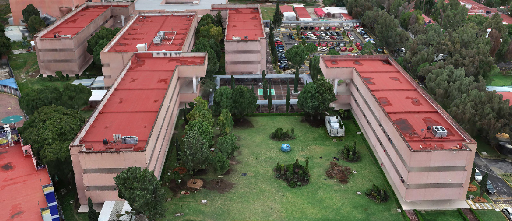
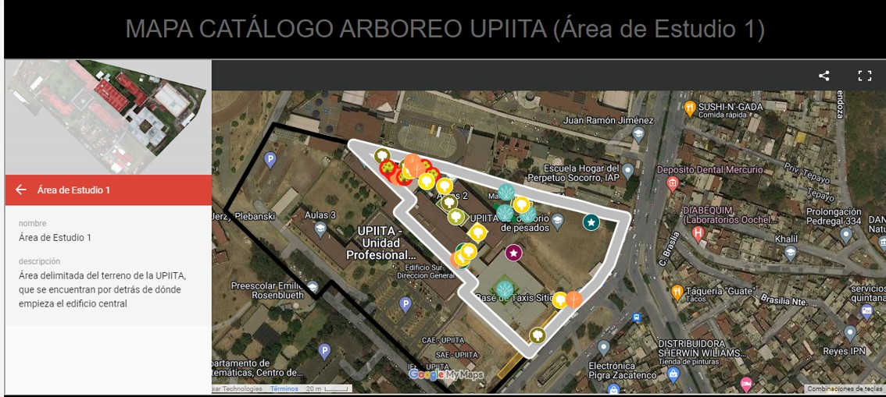
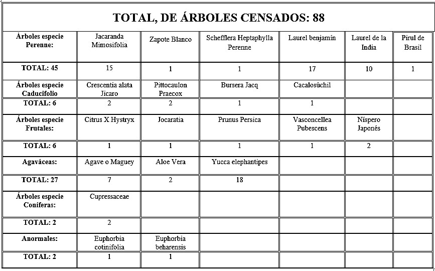

Catálogo y mapeo de especies arbóreas en upiita
- 
- 
- 

Planteamiento del problema
Se desconocen de manera tanto cualitativa como cuantitativa las especies arbóreas que conforman el ecosistema floral de la Unidad Profesional Interdisciplinaria en Ingeniería y Tecnologías Avanzadas IPN.
Delimitación
El proyecto se enfocará en el censo y seguimiento de las zonas que conforman el terreno de la UPIITA, y que se encuentran por detrás del edificio central (Área de estudio 1).
Justificación
El conocimiento, control y seguimiento de la flora que se encuentra en la institución crea conciencia del cuidado de la misma.
De esta manera, podemos tener un porcentaje de predicción hacia la predisposición de las especies por adaptarse al entorno e identificar si alguna se encuentra en riesgo.
Objetivos
Objetivo general
Recopilar información necesaria para el conocimiento, control y seguimiento de las especies arbóreas (Área de estudio 1).
Objetivos específicos
- Recolectar imágenes con el uso del dron Phantom 4 RTK, para localizar las características de la zona.
- Identificar las especies de flora que se encuentran en el área delimitada, con ayuda de biólogas expertas y tecnologías informáticas para tener un porcentaje de confirmación.
- Elaborar una base de datos con la información recabada.
- Dar seguimiento a la flora por medio del análisis de los datos obtenidos con anterioridad, utilizando programas de reconocimiento de imágenes y texto.
Coordinación y Apoyo
- Docente de la Asignatura: Dra. María del Rosario Munguía Fuentes
- Coordinadora Comité Ambiental: Dra. Indira Torres Sandoval
- Coordinador de Laboratorios y Protección Civil: Eduardo Ulises Velázquez Pérez
- Docente: Niels Henrik Navarrete Manzanillo
Alumnos
- Díaz Bello Diego
- Hernández Butron Luis Humberto
- Olmos García Fidel Alfredo
- Vázquez Galán José Emmanuel